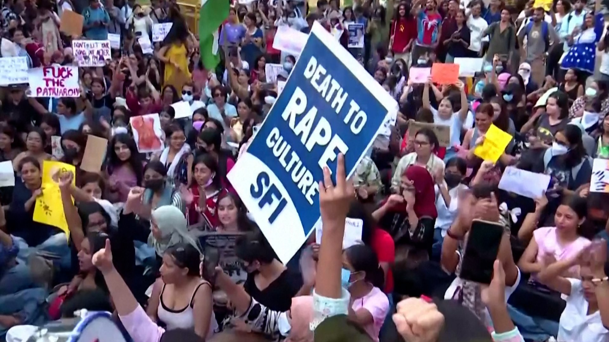
‘We need freedom’: New Delhi women protest sexual violence
4 October 2026
Protests erupt in New Delhi calling for women’s safety, justice, and systemic accountability following the alleged gang rape of a teenager.

4 October 2026
Protests erupt in New Delhi calling for women’s safety, justice, and systemic accountability following the alleged gang rape of a teenager.
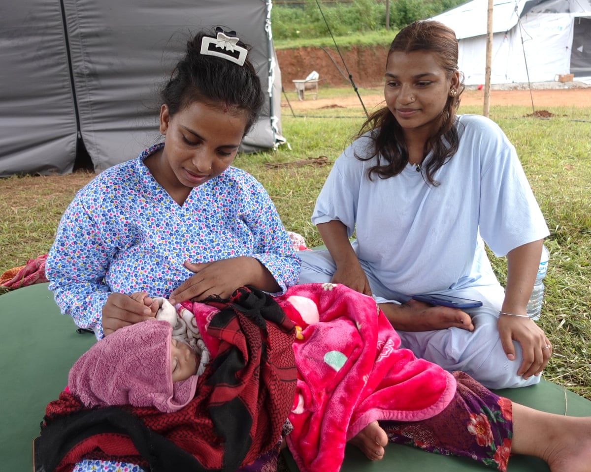
30 September 2026
Kalpana Nepali was seven months pregnant when the flash floods hit, while Pooja Pariyal spent three days on a hospital roof waiting to be rescued. Now, they are living precariously in temporary shelters.
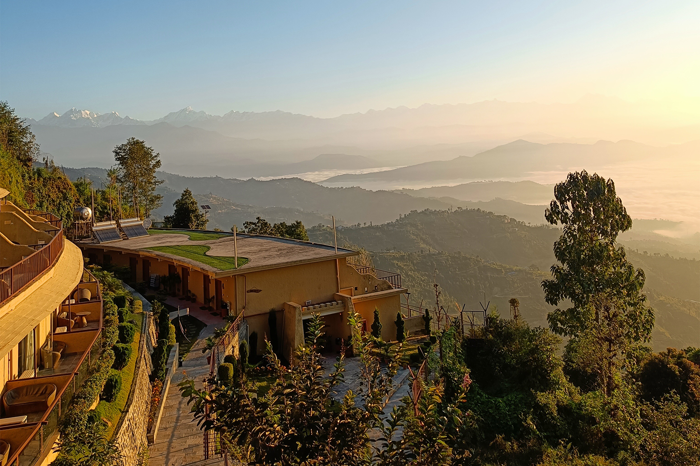
28 September 2026
As Nepal recovers from devastating floods and blocked highways, over a million people dependent on peak-season tourism struggle to survive.
22 September 2026
More than 500 children are left in temporary shelters with their parents missing or declared dead following catastrophic floods across Nepal.
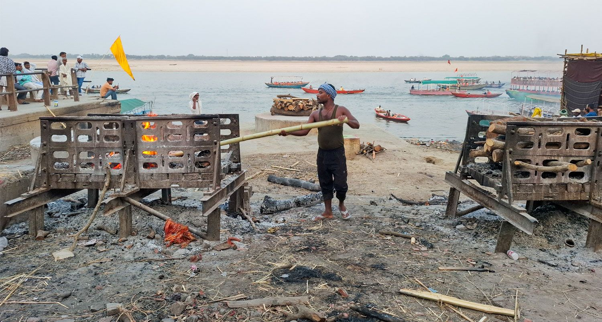
PARI Hindi Archive
पीपुल्स आर्काइव ऑफ़ रूरल इंडिया (PARI) पर महिलाओं के स्वास्थ्य, ग्रामीण आजीविका, श्रम, पर्यावरण और हाशिए के समुदायों पर आधारित ग्राउंड रिपोर्टिंग और सचित्र कहानियों का पूरा संग्रह।
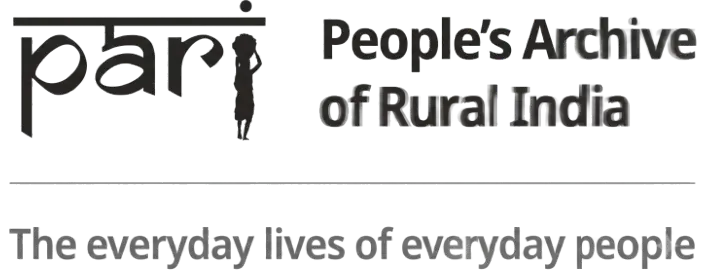
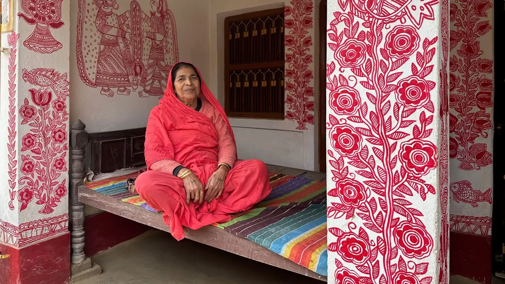
21 February 2026
With many youngsters having migrated for work, it has fallen to the middle-aged and elderly to keep Jitwarpur and its Madhubani heritage going.

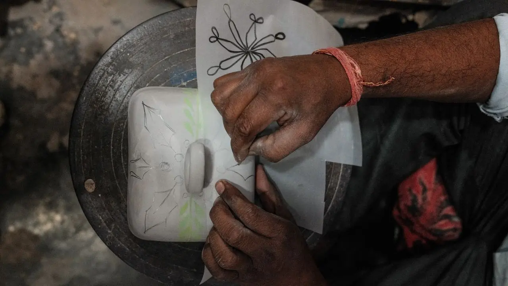
28 March 2026
As India’s top hotels and restaurants source pottery and serveware from Khurja, the legacy craft is keeping up with the times.
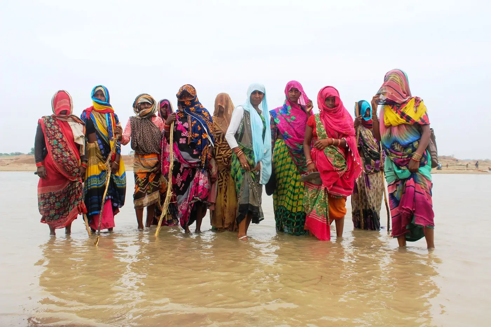
6 June 2020
Farmers in Banda, Uttar Pradesh fight damage to their lands and the Ken river by a sand mining mafia.
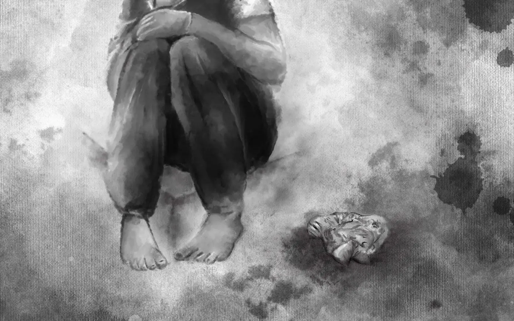
12 May 2020
With schools shut, girls from poor families in Uttar Pradesh lost access to free sanitary napkins and turned to risky options.
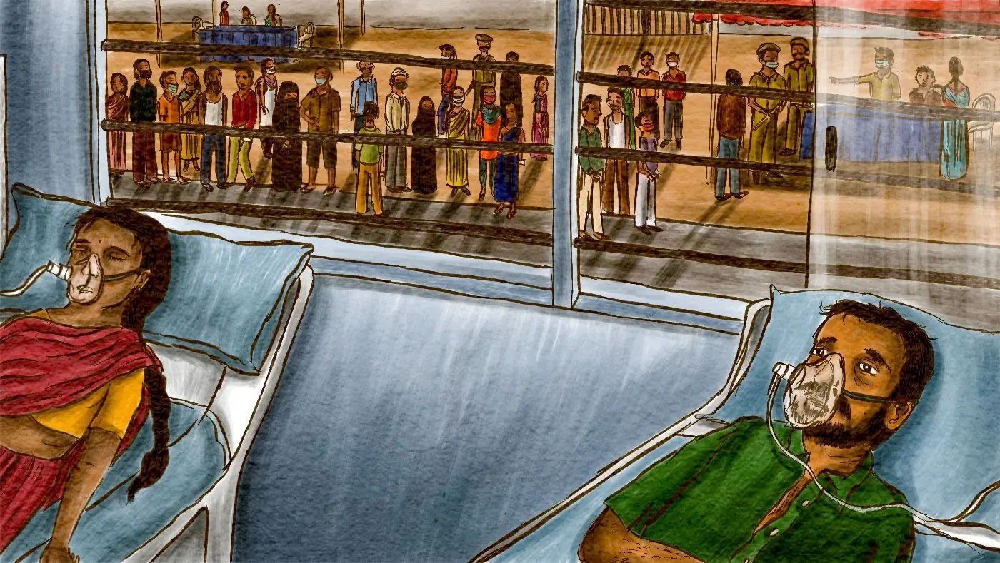
10 May 2021
Schoolteachers working as polling officials in the Uttar Pradesh panchayat elections died of Covid-19 as cases surged around the polls.
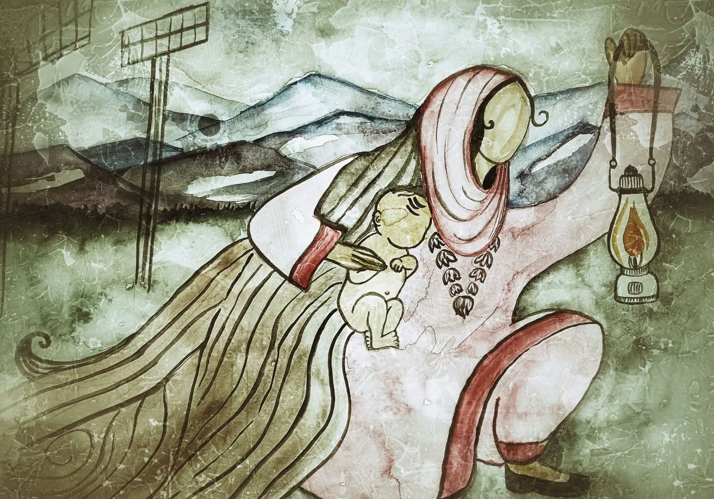
17 November 2022
Pregnant women in Bandipore struggle with erratic power supply and poor public healthcare facilities.
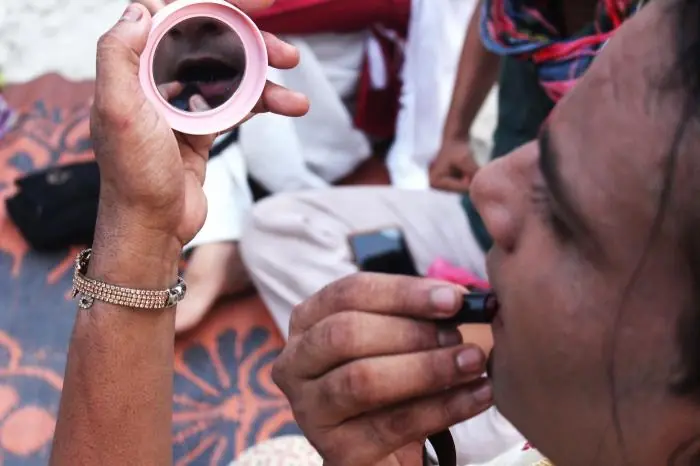
7 July 2022
A report on how gaps in India’s rape laws leave transwomen vulnerable to sexual violence and poor access to justice.

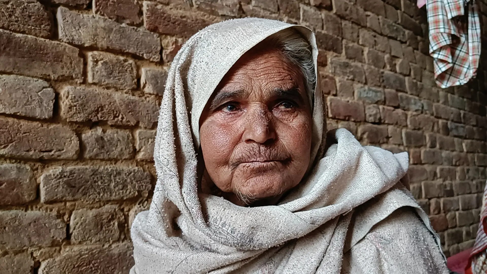
16 February 2022
A story on Dalit Sikh women in Punjab working in punishing conditions and trapped in cycles of caste, labour, and debt.

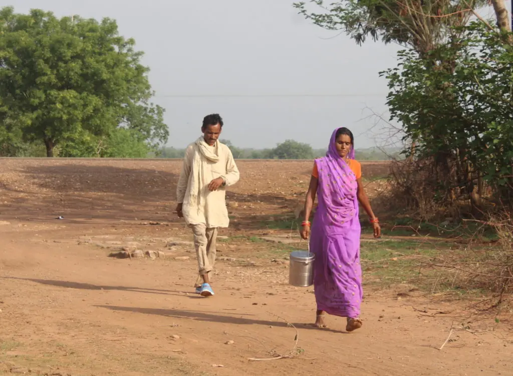
8 July 2022
Up to 70% of women in parts of drought-prone Bundelkhand are affected by acute water shortages, according to one NGO estimate.